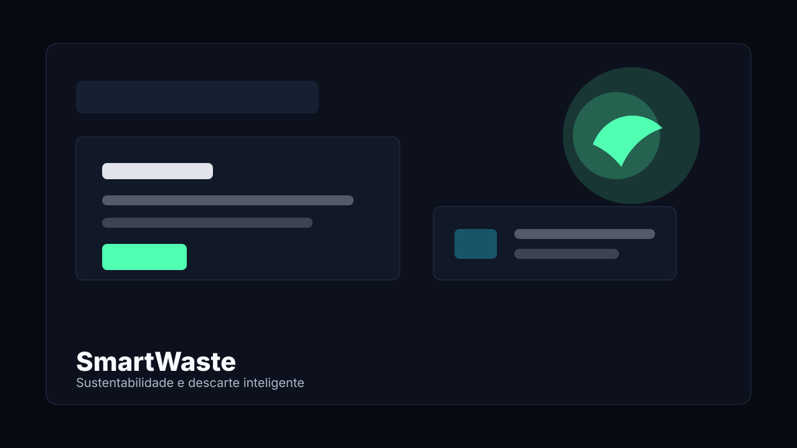
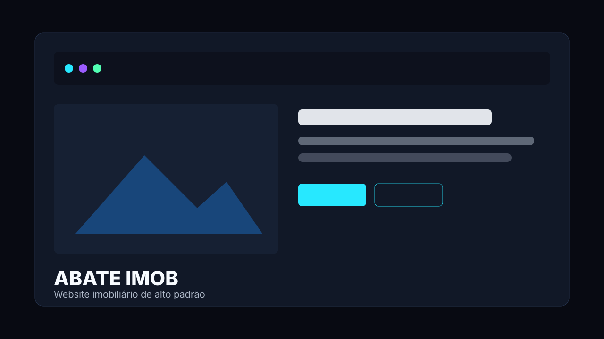
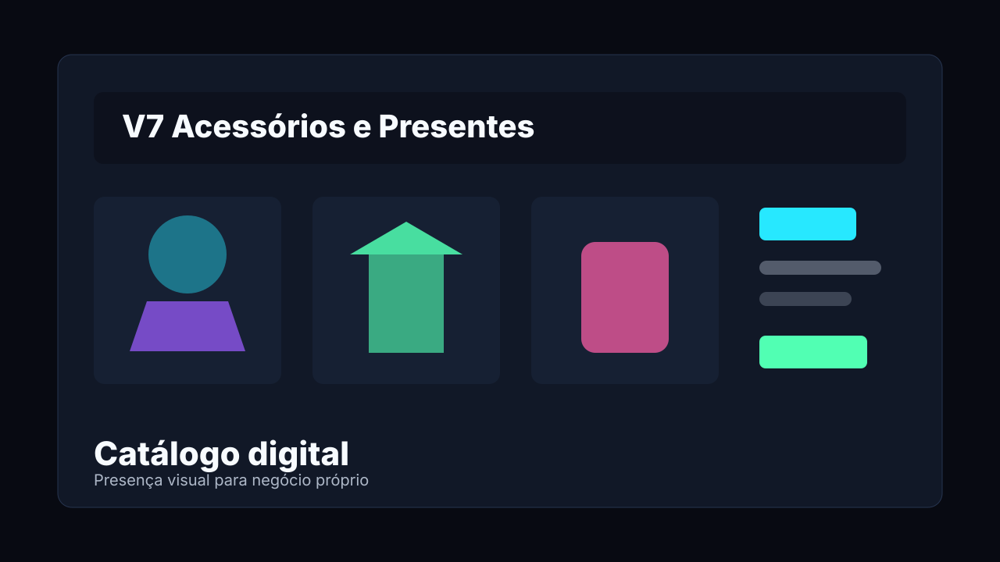

Full stack em formação
Miqueias Masuete
Desenvolvedor Full Stack
Crio soluções digitais, interfaces modernas e projetos funcionais unindo desenvolvimento web, visão de negócio e tecnologia aplicada.
Atuo com projetos web, propostas comerciais, soluções acadêmicas e aplicações práticas envolvendo programação, impressão 3D e presença digital.
Sobre mim
Tech, negócio e prática real no mesmo caminho.
Sou Miqueias Masuete, estudante de Engenharia de Computação na FACENS e desenvolvedor full stack em formação.
Tenho interesse por back-end, hardware, impressão 3D e desenvolvimento de soluções digitais aplicadas a problemas reais. Atualmente estou aprofundando meus estudos em programação estruturada, front-end e banco de dados, buscando construir uma base sólida para desenvolver sistemas completos, funcionais e bem organizados.
Além da área acadêmica, também tenho experiência prática administrando uma loja, trabalhando com impressão 3D e criando soluções digitais para projetos próprios, acadêmicos e propostas comerciais.
Engenharia de Computação
Desenvolvimento Full Stack
Back-end, dados e lógica
Impressão 3D e negócio
Formação e experiência
Base acadêmica com aplicação prática.
Engenharia de Computação — FACENS
Curso voltado ao desenvolvimento de software, fundamentos de computação, hardware, lógica, sistemas e soluções tecnológicas. Atualmente, meus estudos estão focados em programação estruturada, desenvolvimento web, back-end, banco de dados e fundamentos técnicos para criação de sistemas completos.
Administrador de loja, operador de impressão 3D e desenvolvedor em formação
Atuo na administração de uma loja física, lidando com atendimento, vendas, organização de produtos, presença digital e criação de soluções para o negócio. Também trabalho com impressão 3D, desde a preparação dos modelos até a produção de peças personalizadas.
Essa experiência me ajuda a unir tecnologia, criatividade e visão prática de negócio, criando soluções que não ficam apenas no código, mas podem ser aplicadas em situações reais.
Projetos em destaque
Projetos acadêmicos, comerciais e aplicados.
Seleção de trabalhos que mostram evolução técnica, organização visual e aplicação prática em contextos reais.

Projeto acadêmico
SmartWaste
Projeto acadêmico desenvolvido com foco em sustentabilidade e tecnologia. A proposta é utilizar soluções digitais para apoiar a gestão de resíduos, descarte correto e conexão entre usuários, coletores e pontos de coleta.
No projeto, participei da construção da interface e da estrutura web, aplicando conceitos de desenvolvimento front-end, organização de conteúdo e apresentação de solução tecnológica para um problema real.

Proposta comercial
ABATE IMOB
Proposta de site imobiliário de alto padrão, criada para apresentar imóveis de forma profissional, melhorar a presença digital da marca e facilitar o contato com possíveis clientes.
O projeto foi desenvolvido como uma proposta comercial/teste, com foco em layout moderno, experiência do usuário, responsividade e comunicação visual voltada ao mercado imobiliário.

Negócio próprio
V7 Acessórios e Presentes
Projeto ligado à minha experiência prática com loja, produtos físicos, impressão 3D e presença digital. Envolve organização de produtos, criação de materiais, atendimento, comunicação visual e ideias para catálogo e divulgação online.
Esse projeto representa a união entre tecnologia, negócio próprio e soluções digitais aplicadas ao comércio.
Tecnologias
Stack em construção, com foco em sistemas completos.
Front-end
HTML Intermediário
CSS Intermediário
JavaScript Básico/Intermediário
Back-end e banco de dados
Lógica de programação Em desenvolvimento
Programação estruturada Estudando
Banco de dados Estudando
Ferramentas
Git Básico/Intermediário
GitHub Básico/Intermediário
Vercel Básico
VS Code Intermediário
Outras áreas
Impressão 3D Intermediário
Hardware Interesse/estudo
Figma/Canva Básico
Diferenciais
Por que trabalhar comigo?
Tenho uma visão prática que une tecnologia, negócio e criação. Além de estudar Engenharia de Computação, também administro uma loja e trabalho com impressão 3D, o que me ajuda a entender melhor problemas reais, atendimento ao cliente, apresentação de produtos e soluções digitais aplicadas no dia a dia.
Meu objetivo é criar projetos funcionais, organizados e com boa apresentação, sempre buscando evoluir tecnicamente e entregar soluções cada vez mais completas.
Visão prática de negócio por administrar uma loja
Experiência com atendimento e comunicação com clientes
Conhecimento em impressão 3D e criação de produtos físicos
Interesse em back-end, hardware e sistemas completos
Facilidade em transformar ideias em projetos visuais e funcionais
Experiência com projetos acadêmicos e propostas comerciais
Aprendizado constante em desenvolvimento web e banco de dados
Serviços
O que posso desenvolver
Sites institucionais
Páginas profissionais para apresentar empresas, serviços e marcas.
Landing pages
Páginas focadas em divulgação, conversão e captação de clientes.
Portfólios
Sites pessoais para apresentar projetos, habilidades e experiências.
Sites para imobiliárias
Páginas modernas para exibir imóveis e facilitar o contato com clientes.
Catálogos digitais
Apresentação online de produtos, serviços ou coleções.
Integração com WhatsApp
Botões e chamadas diretas para atendimento rápido.
Melhorias em sites existentes
Ajustes visuais, responsividade, organização e experiência do usuário.
Interfaces para projetos acadêmicos
Telas e páginas para apresentar trabalhos, protótipos e soluções.